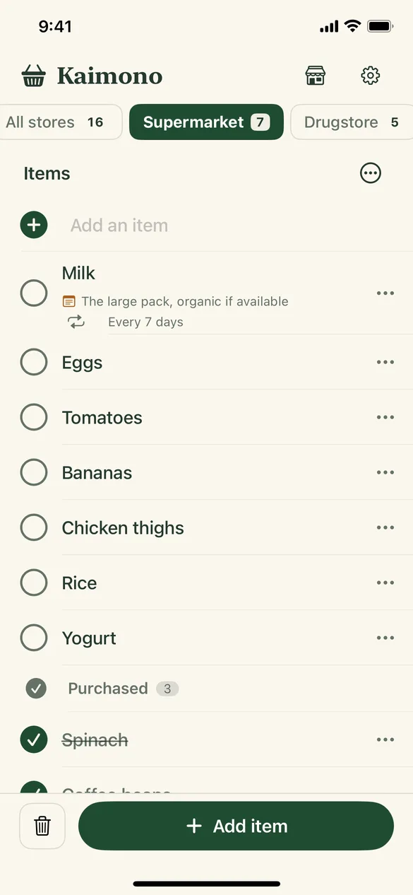
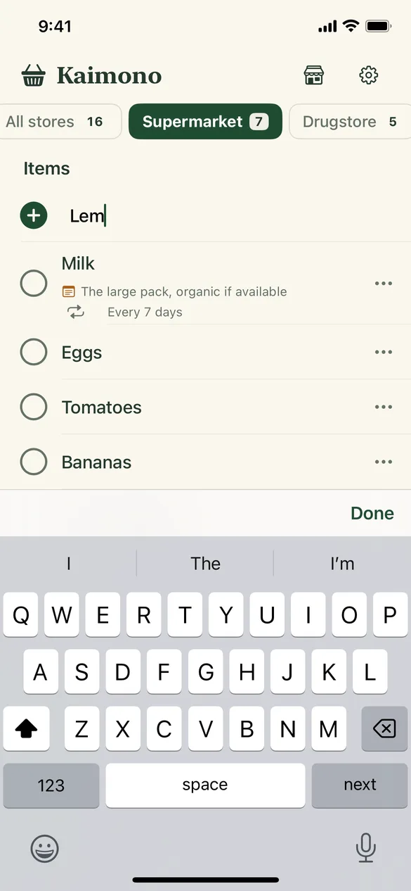
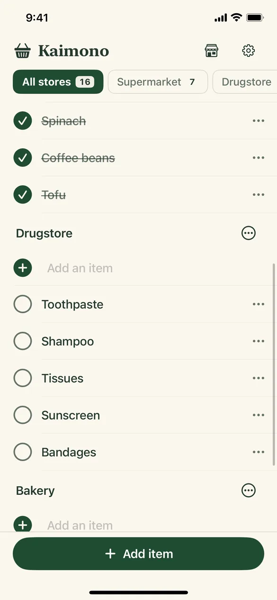
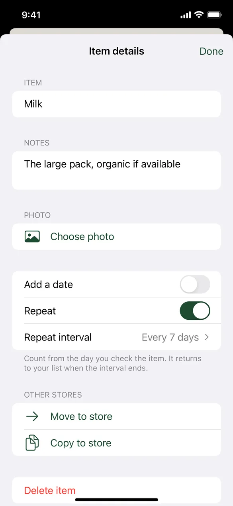
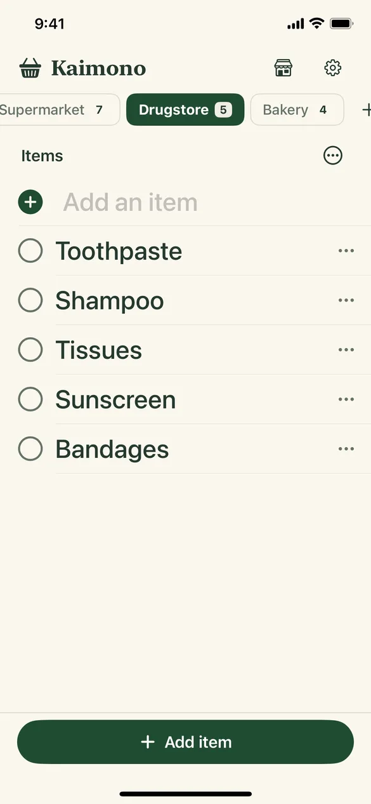

A shopping list
for each store
Type an item and press Return, and the next line is ready. Keep one list for the supermarket, one for the drugstore, one for the bakery. In the store, tap the circle when something is in your basket.
Free for iPhone. No account needed. Your lists stay on your iPhone.

What it does




Also
- Swipe right to check off, left to delete, with undo
- Notes, photos and dates for each item
- Paste a list from Notes to add many items at once
- Share a list as text, a Home Screen widget, and backups to the Files app
- Available in 24 languages